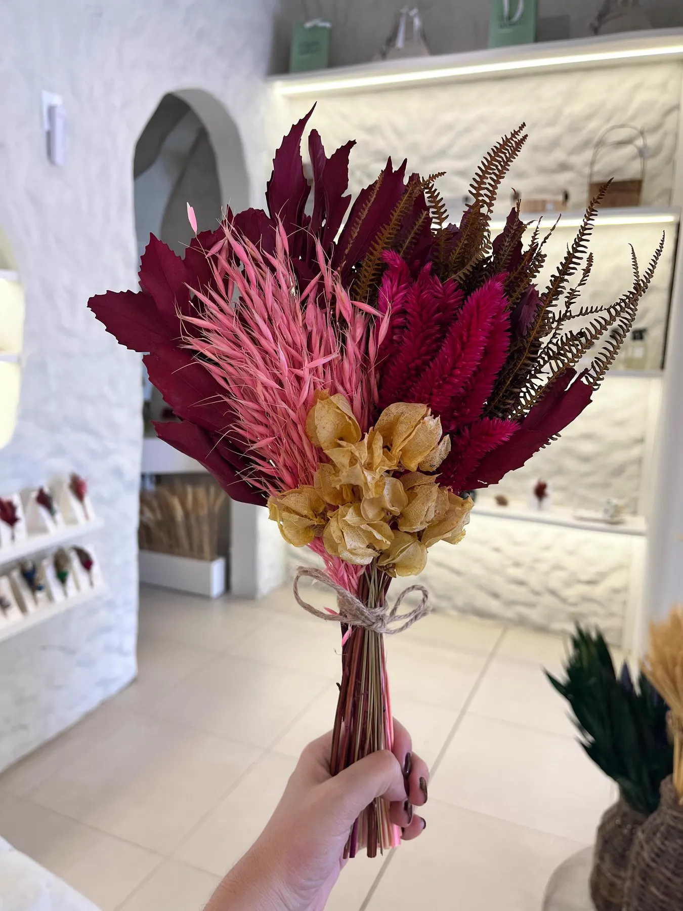
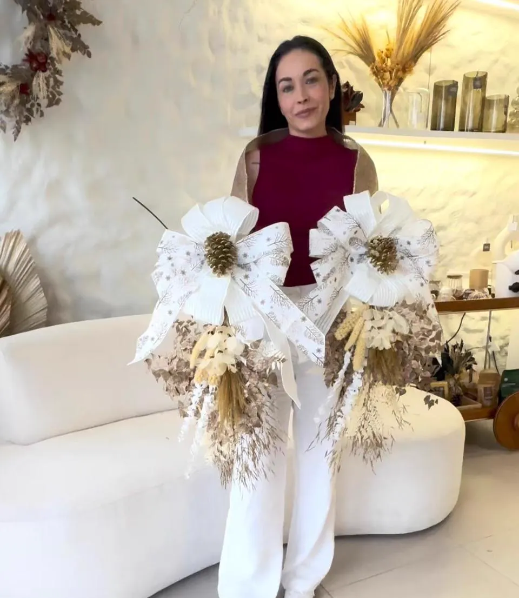

Corporativo & equipes
Empresas, consultórios, construtoras e imobiliárias que buscam valorizar colaboradores e cuidar de verdade das pessoas.
Mais do que montar arranjos, a oficina cria uma pausa sensorial para desacelerar, despertar a criatividade e transformar um encontro comum em lembrança afetiva.


Não entregamos apenas flores. Entregamos a alegria do processo.
Empresas, consultórios, construtoras e imobiliárias que buscam valorizar colaboradores e cuidar de verdade das pessoas.
Lojas, clínicas, salões e marcas que querem encantar clientes com ações de fidelização de alto valor percebido.
Lançamentos, feiras, encontros e datas comemorativas que pedem uma experiência estética e memorável.
Ao final, cada participante leva para casa a própria criação. Toda vez que olhar para aquele arranjo, vai lembrar do cuidado que recebeu.




Levamos flores, ferramentas e todos os insumos da atividade prática.
Orientação acolhedora e especializada para cada participante durante a montagem.
Cada pessoa leva sua criação para decorar a casa ou presentear alguém especial.
Mínimo de 10 participantes. A oficina não inclui alimentos, bebidas ou locação do espaço: o contratante disponibiliza o ambiente, com mesas e cadeiras para todos.

Fundadora e designer floral da Capim Urbano, Juliana une sensibilidade estética, criatividade e sofisticação em um trabalho autoral com flores, arte botânica e decoração afetiva.
Com experiência em imagem, moda e comunicação, conduz a oficina de forma acolhedora, clara e adaptada ao perfil de cada grupo.
Conte a data, o número de pessoas e o objetivo do encontro.